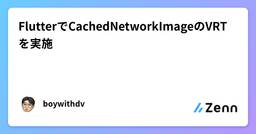
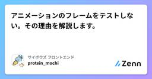
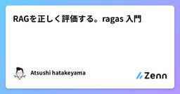
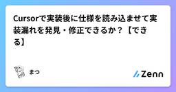

Zennの「Test」のフィード
フィード
【Go】Goのテストに入門してみた！ ~並行テスト編~
Zennの「Test」のフィード
はじめに前回は、「テストの前処理・後処理」を見ていきました。今回は、「並行テスト」に入門します！前回の記事はこちら！https://zenn.dev/tmyhrn/articles/a93e750fde5d28 この記事でわかることテストを並行実行する方法テスト結果の見方並行実行するケース 普通にテストしてみる擬似的に、以下のような高負荷な処理を実行します。main_test.gopackage mainimport ( "testing" "time" "unicode/utf8")func Length(s st...
13時間前

FlutterでCachedNetworkImageのVRTを実施
Zennの「Test」のフィード
Flutterでcached_network_imageを使ったゴールデンテスト（VRT）実装ガイド はじめにcached_network_imageは、Flutterで画像をキャッシュ付きでネットワークから読み込む便利なパッケージです。しかしゴールデンテスト（Visual Regression Testing, VRT）では、ネットワーク依存の状態遷移（ローディング → 正常表示）をそのまま扱うと、再現性の低いテストになってしまいます。そこで本記事では、CacheManagerを差し替えてローカルPNGファイルを参照する形に変更する方法を解説します。 なぜCache...
1日前

アニメーションのフレームをテストしない。その理由を解説します。 2
2
Zennの「Test」のフィード
!この記事は、CYBOZU SUMMER BLOG FES '25の記事です。「アニメーションのテストは、開始と終了の状態だけをチェックすればいい」最初は、滑らかに動く UI を見て、「テストの開始と終了しか見ていないなんて、全体像を見逃していないか？」なんて疑問に思ってました。今となっては「まあ、そうだろうな」と何となく理解しつつも、ちゃんと全体的な理由をまとめたことはありませんでした。こんにちは！サイボウズ株式会社フロントエンドエンジニアの protein_mochi です。この記事では、なぜアニメーションの「フレーム単位」をテストすることが非現実的で、代わりに取れる方...
3日前
【Go】Goのテストに入門してみた！ ~テストの前処理・後処理編~
Zennの「Test」のフィード
はじめに前回は「一部のテストをスキップする方法」を見ていきました。今回は「テストの前処理・後処理」に入門していきます！前回の記事はこちら！https://zenn.dev/tmyhrn/articles/cc14d4e12232c2 この記事でわかることテストの前処理・後処理の実装方法テストの前処理・後処理をする上での注意点 テストの前処理・後処理テスト実行時、DB接続や環境変数設定など、事前・事後に処理しておきたいことがあると思います。そんなときGoでは、以下のように実装することができます。main_test.gopackage mainimp...
4日前
【和訳解説】本番環境で「Vibe Coding」を実践する方法とは？Anthropic研究者が語る、AI時代のエンジニアの新たな役割
Zennの「Test」のフィード
はじめにAIによるコード生成が日常となった今、私たちエンジニアは大きな転換点に立っています。AIを単なる「便利なツール」として使う段階から、AIを「自律的な同僚」として捉え、協業する段階へ。その最先端の概念が「Vibe Coding」です。「Claude」を開発するAnthropicの研究者 Eric氏による講演「How to vibe code in prod responsibly」が良かったので、本記事ではエンジニアの視点から深掘りして解説します。https://www.youtube.com/watch?v=fHWFF_pnqDk彼自身、事故で手を骨折し、2ヶ月間まっ...
6日前

RAGを正しく評価する。ragas 入門
Zennの「Test」のフィード
初めにここ数年で生成AIを利用したアプリケーションは急増し、内製する企業も増えています。特にRAGを利用する場合、回答精度はプロダクトの品質を決める上で重要な観点となるでしょう。製品開発の中で、回答精度の評価をExcelシートで管理したり、調査依頼することも少なくなく、これらはプロダクトの開発速度を高める上でのボトルネックとなります。そこで今回は、RAGシステムの品質を自動で評価するPythonライブラリのragasについて説明していきます。 ragasとはRAGシステムなどを自動的かつ定量的に評価するためのオープンソースのライブラリです。回答がどの程度コンテキスト（参考...
6日前
【Go】Goのテストに入門してみた！ ~一部のテストをスキップ編~
Zennの「Test」のフィード
はじめに前回は「一部のサブテストを実行する方法」を見ていきました。今回は「一部のテストをスキップする方法」に入門していきます！前回の記事はこちら！https://zenn.dev/tmyhrn/articles/bdef9d3d5ef218 この記事でわかることt.Skip() や t.Skipf() を使ってテストをスキップする方法testing.Short() と -shortフラグ を活用して重い処理を避ける方法サブテスト単位で条件に応じてテストをスキップする方法 基本的なスキップの方法main_test.gopackage mainim...
6日前

Cursorで実装後に仕様を読み込ませて実装漏れを発見・修正できるか？【できる】
Zennの「Test」のフィード
私のようなSTG全盛期にPCをやっていた人なら知っているかもしれないBulletML。弾幕の挙動をxmlで書く弾幕言語です。白い弾幕君が当時有名だったと記憶しています。今回、これをUnityで再現したくなりxmlパーサーと、弾幕を動作させるスクリプトをcursorで書いていました。そこで試したことです。 Cursorで実装後に仕様を読み込ませて仕様と実装を比較し、実装漏れを発見・修正できるか？BulletMLの仕様がもちろん存在します。(https://www.asahi-net.or.jp/~cs8k-cyu/bulletml/)果たして仕様通り実装できているのか？それ...
7日前

【Go】Goのテストに入門してみた！ ~一部のサブテスト実行編~
Zennの「Test」のフィード
はじめに前回はテーブル駆動テスト（Table Driven Test）について見ていきました。今回は「一部のサブテストを実行する方法」に入門していきます。前回の記事はこちら！https://zenn.dev/tmyhrn/articles/8dcc4198903d7f この記事でわかること一部のサブテストを実行する方法正規表現を用いたテストケースのパターン 実装してみたmain_test.gopackage mainimport ( "testing" "unicode/utf8")func Length(s string) i...
8日前

Android Studioで低スペックエミュレータを作成してアプリの動作を検証する方法
Zennの「Test」のフィード
Android Studioで低スペックエミュレータを作成してアプリの動作を検証する方法 🤔 こんな悩みはありませんか？アプリ開発をしていて、こんな経験はありませんか？QA用の端末では動くのに、ユーザーから「重い」「落ちる」という報告が来る古い端末や低スペック端末での動作確認をしたいけど、実機がないメモリ不足やパフォーマンス不足での不具合を事前に発見したい実際に僕も、QA用の端末で問題なく動いていたアプリで、ユーザーからバグ報告があったのに同じ端末では再現しないという状況に遭遇しました。そこで、Android Studioのエミュレータで意図的に低スペック環境を作...
9日前
testcontainers for go + flyway で実現する統合テスト
Zennの「Test」のフィード
対象読者Go を採用した開発環境に統合テストを導入したいflyway を採用した開発環境に統合テストを導入したいtestcontainers + flyway の組み合わせに興味がある 概要https://github.com/sugawani/testcontainers-go-with-flyway開発言語が Go でマイグレーションに flyway を使用している環境で統合テストを導入しようとした際に testcontainers for go が良さそうだったので実装してみました メリット開発者が dockerfile などの docker 周りを意...
9日前
生成AIでのテスト設計はこの「勘所3つ」を押さえれば大丈夫
Zennの「Test」のフィード
はじめにこんにちは！アルダグラムでQAのお手伝いをしているmiyashitaです！最近、QAのシステムテスト設計でもAI使いたいなぁ～と思い、色々と試行錯誤していました。その中で、こんな勘所を持っていたらAIでうまくテスト設計していけるのかも？と感じたところがありましたので、今回はそちらを紹介できればと思います。 使用するツールChatGPT：o4-mini-high 今回やりたいこと仕様書を解析して、テスト観点表を作成してもらう仕様書及びテスト観点表を基に、テストケースを作成してもらう 主な勘所AIをテスト設計で活用するための勘所は、以下の3つです...
10日前
【Go】Goのテストに入門してみた！ ~Table Driven Test編~
Zennの「Test」のフィード
はじめに前回は、Goにおけるテストの基本を学びました。今回は、Goでよく使われる 「テーブル駆動テスト（Table Driven Test）」 に入門します。前回の記事はこちら↓https://zenn.dev/tmyhrn/articles/7fc1bc9c9e634d この記事でわかることTable Driven Testの概要実装方法実装時に押さえておきたいポイント 実装してみた前回に引き続き、マルチバイトでの文字列カウントについてのテストケースを見ていきます。main_test.gopackage mainimport ( "te...
10日前
Next.js 15 + Jest + MSW でネットワークレベルAPIモックテストを実現する
Zennの「Test」のフィード
Next.js 15 + Jest + MSW でネットワークレベルAPIモックテストを実現する 📖 概要このガイドでは、Next.js 15プロジェクトにMSW（Mock Service Worker）を導入し、JestでネットワークレベルのAPIモックテストを実現する方法を詳しく解説します。 🎯 目標ネットワークレベルモック: fetch APIが実際に呼ばれ、MSWがレスポンスを返す型安全なテスト環境: TypeScriptによる型保証保守性の高いテスト: テストケースの追加・変更が容易Next.js 15対応: App Routerやその他機能との...
10日前
[Playwright] ログイン状態でテストする簡単なやり方
Zennの「Test」のフィード
🌱 はじめにPlaywrightで認証のテストに苦手意識があり、避けていましたが、業務でやる必要が発生したため、試行錯誤しながら実装しました。その時に発見した簡単なやり方を紹介します。紹介する方法では実現できない場合や詳細な内容を知りたい方は、公式ドキュメントをご確認ください 🌱 結論!playwright.config.tsに指定のsession.jsonを設定する各テストごとに指定のsession.jsonを設定する 🌱 事前準備!下記のsession.jsonは、サンプルとしてiron-sessionを設定にしております。ご参考にする場合...
10日前
PrismaからPGliteに繋げてリポジトリ層のテストをお手軽にやってみた
Zennの「Test」のフィード
こんにちは、エンジニアの籏野です。今回はPGliteとPrismaを用いて、実際にデータベースに接続して行うリポジトリ層のテストについて紹介します。作成したサンプルプロジェクトは以下のリポジトリに置いていますので、合わせてご確認ください。https://github.com/taku-hatano/pglite-prisma-test リポジトリ層におけるテストの課題クリーンアーキテクチャのようなデザインパターンを利用する場合、リポジトリ層を利用してビジネスロジックとデータアクセス層を分離することはよくあるかと思います。これにより、ビジネスロジック層においてはリポジトリ層を...
10日前
【Go】Goのテストに入門してみた！ ~基本編~
Zennの「Test」のフィード
はじめにこれまでGoでAPIを開発してきましたが、実はテストコードを書いた経験はありませんでした。（テストの様子をスクショに撮って証跡として残していました）業務でも積極的にテストコードを書いていこうという方針になりましたので、Goでのテストに入門してみようと思います。 この記事でわかることGoでの基本的なテストの書き方テストを書く上での押さえなければいけないポイントテスト関数がどのように実行・評価されるかの基本的な流れ テストコード書いてみたとりあえず、テストコードを書いてみました。今回はマルチバイトでの文字列カウントのテストにしてみました。main_...
12日前
Spock を使って Unit テストを書いてみる
Zennの「Test」のフィード
はじめにJava のテストというと JUnit を使うことが多いかと思いますが、今回は Spock というテストフレームワークを使ってみて、とても便利だったので紹介します。Spock は Groovy ベースのテストフレームワークで、特にBehavior Driven Development(BDD)スタイルのテストを書くのに適しています。JUnit と比べて、より表現力豊かなテストを書くことができ、読みやすさも向上します。この記事では基本的な Spock の使い方、使う際の注意したいポイントをいくつか紹介します。以下は公式のドキュメントです。詳細な情報は公式ドキュメントを...
12日前
【JSTQB解説】第1章：テストの基礎 - ソフトウェアテストの基本概念と7つの原則
Zennの「Test」のフィード
【JSTQB Foundation Level V4.0 完全解説シリーズ】第1章：テストの基礎 この記事についてJSTQB Foundation Level資格を取得した経験と、実際のQA業務で学んだことを基に、シラバスの内容を実践的な視点で解説します。こんな方におすすめです。JSTQB Foundation Level資格の取得を検討しているテスト業務に配属されたばかりQAエンジニア・テストエンジニアに興味がある開発者だがテストについても学びたい記事の内容は以下の通りです。なぜテストが重要なのかテストの7つの基本原則テスト担当者の役割と必要なスキル...
12日前
「知識ゼロから学ぶソフトウェアテスト 第3版 アジャイル・AI時代の必携教科書」を読んでみたメモ
Zennの「Test」のフィード
はじめに環境が変わり開発に関わっていくことになったため、テスト知識０の状態で、「知識ゼロから学ぶソフトウェアテスト 第3版 アジャイル・AI時代の必携教科書」を読んでみました。読みながらのメモを書いた記事になります。 読書メモ 1章ソフトウェアで大事なのはどの機能でバグが出やすいか、その部分に対してどのようなテスト手法を適用すれば十分な品質が得られるか知ること全くバグのないソフトウェアは存在しない、完全なテスト手法が存在しないから完璧でなく十分な品質をもつソフトウェアを目指すテスト手法を学ぶ 2章 ホワイトボックステストホワイトボックステストプログ...
13日前